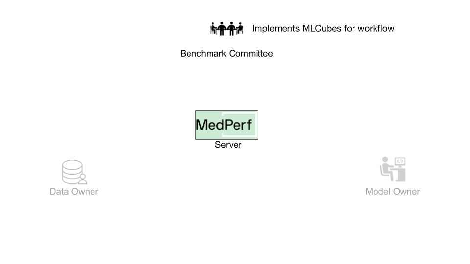
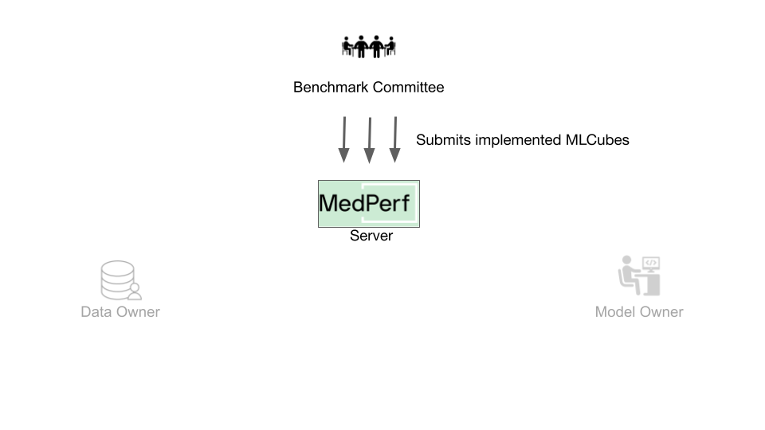
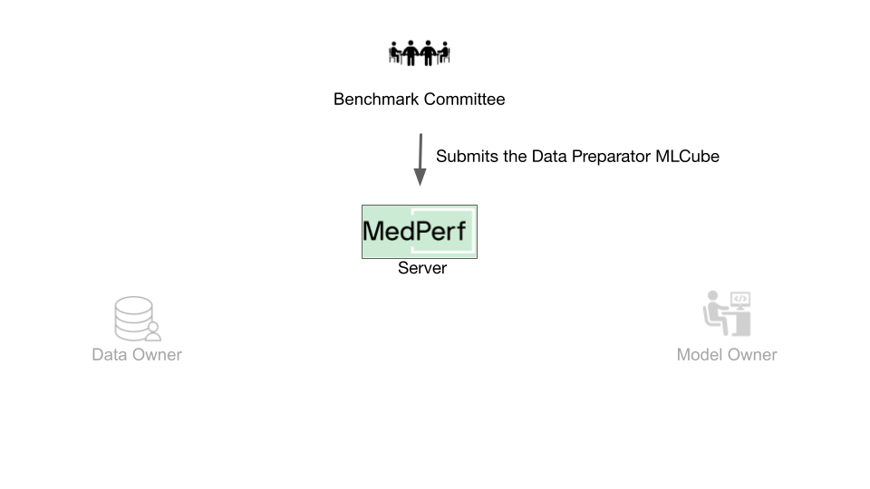

Hands-on Tutorial for Bechmark Committee¶
Overview¶
In this guide, you will learn how a user can use MedPerf to create a benchmark. The key tasks can be summarized as follows:
- Implement a valid workflow.
- Develop a demo dataset.
- Test your workflow.
- Submitting the Containers to the MedPerf server.
- Host the demo dataset.
- Submit the benchmark to the MedPerf server.
It's assumed that you have already set up the general testing environment as explained in the installation and setup guide.
Before You Start¶
First steps¶
Running in cloud via Github Codespaces¶
As the most easy way to play with the tutorials you can launch a preinstalled Codespace cloud environment for MedPerf by clicking this link:

Running in local environment¶
To start experimenting with MedPerf through this tutorial on your local machine, you need to start by following these quick steps:
Prepare the Local MedPerf Server¶
For the purpose of the tutorial, you have to initialize a local MedPerf server with a fresh database and then create the necessary entities that you will be interacting with. To do so, run the following: (make sure you are in MedPerf's root folder)
Download the Necessary files¶
A script is provided to download all the necessary files so that you follow the tutorial smoothly. Run the following: (make sure you are in MedPerf's root folder)
This will create a workspace folder medperf_tutorial where all necessary files are downloaded. The folder contains the following content:
Toy content description
In this tutorial we will create a benchmark that classifies chest X-Ray images.
Demo Data¶
The medperf_tutorial/demo_data/ folder contains the demo dataset content.
images/folder includes sample images.labels/labels.csvprovides a basic ground truth markup, indicating the class each image belongs to.
The demo dataset is a sample dataset used for the development of your benchmark and used by Model Owners for the development of their models. More details are available in the section below
Data Preparator Container¶
The medperf_tutorial/data_preparator/ contains a DataPreparator container that you must implement. This container:
- Transforms raw data into a format convenient for model consumption, such as converting DICOM images into numpy tensors, cropping patches, normalizing columns, etc. It's up to you to define the format that is handy for future models.
- Ensures its output is in a standardized format, allowing Model Owners/Developers to rely on its consistency.
Model Container¶
The medperf_tutorial/model_custom_cnn/ is an example of a Model Container. You need to implement a reference model which will be used by data owners to test the compatibility of their data with your pipeline. Also, Model Developers joining your benchmark will follow the input/output specifications of this model when building their own models.
Metrics Container¶
The medperf_tutorial/metrics/ houses a Metrics Container that processes ground truth data, model predictions, and computes performance metrics - such as classification accuracy, loss, etc. After a Dataset Owner runs the benchmark pipeline on their data, these final metric values will be shared with you as the Benchmark Owner.
In real life all the listed artifacts and files have to be created on your own. However, for tutorial's sake you may use this toy data.
Login to the Local MedPerf Server¶
The local MedPerf server is pre-configured with a dummy local authentication system. Remember that when you are communicating with the real MedPerf server, you should follow the steps in this guide to login. For the tutorials, you should run the following:
You are now ready to start!
1. Implement a Valid Workflow¶
 The implementation of a valid workflow is accomplished by implementing three Containers:
-
Data Preparator Container: This Container will transform raw data into a dataset ready for the AI model execution. All data owners willing to participate in this benchmark will have their data prepared using this Container. A guide on how to implement MedPerf-compatible data preparation Containers can be found here.
-
Reference Model Container: This Container will contain an example model implementation for the desired AI task. It should be compatible with the data preparation Container (i.e., the outputs of the data preparation Container can be directly fed as inputs to this Container). A guide on how to implement MedPerf-compatible model Containers can be found here.
-
Metrics Container: This Container will be responsible for evaluating the performance of a model. It should be compatible with the reference model Container (i.e., the outputs of the reference model Container can be directly fed as inputs to this Container). A guide on how to implement MedPerf-compatible metrics Containers can be found here.
For this tutorial, you are provided with following three already implemented containers for the task of chest X-ray classification. The implementations can be found in the following links: Data Preparator, Reference Model, Metrics. These containers are setup locally for you and can be found in your workspace folder under data_preparator, model_custom_cnn, and metrics.
2. Develop a Demo Dataset¶
 A demo dataset is a small reference dataset. It contains a few data records and their labels, which will be used to test the benchmark's workflow in two scenarios:
A demo dataset is a small reference dataset. It contains a few data records and their labels, which will be used to test the benchmark's workflow in two scenarios:
-
It is used for testing the benchmark's default workflow. The MedPerf client automatically runs a compatibility test of the benchmark's three containers prior to its submission. The test is run using the benchmark's demo dataset as input.
-
When a model owner wants to participate in the benchmark, the MedPerf client tests the compatibility of their model with the benchmark's data preparation container and metrics container. The test is run using the benchmark's demo dataset as input.
For this tutorial, you are provided with a demo dataset for the chest X-ray classification workflow. The dataset can be found in your workspace folder under demo_data. It is a small dataset comprising two chest X-ray images and corresponding thoracic disease labels.
You can test the workflow now that you have the three containers and the demo data. Testing the workflow before submitting any asset to the MedPerf server is usually recommended.
3. Test your Workflow¶
MedPerf provides a single command to test an inference workflow. To test your workflow with local containers and local data, the following need to be passed to the command:
- Path to the data preparation container config file:
medperf_tutorial/data_preparator/container_config.yaml. - Path to the model container config file:
medperf_tutorial/model_custom_cnn/container_config.yaml. - Path to the metrics container config file:
medperf_tutorial/metrics/container_config.yaml. - Path to the demo dataset data records:
medperf_tutorial/demo_data/images. - Path to the demo dataset data labels.
medperf_tutorial/demo_data/labels.
Additionally, you will need to provide the parameters files of each container, and the additional files of the model container which include its weights:
- Path to the data preparation parameters file:
medperf_tutorial/data_preparator/workspace/parameters.yaml. - Path to the model parameters file:
medperf_tutorial/model_custom_cnn/workspace/parameters.yaml. - Path to the metrics parameters file:
medperf_tutorial/metrics/workspace/parameters.yaml. - Path to the model additional files:
medperf_tutorial/model_custom_cnn/workspace/additional_files.
Run the following command to execute the test ensuring you are in MedPerf's root folder:
medperf test run \
--data_preparator "medperf_tutorial/data_preparator/container_config.yaml" \
--model "medperf_tutorial/model_custom_cnn/container_config.yaml" \
--evaluator "medperf_tutorial/metrics/container_config.yaml" \
--data_preparator_parameters "medperf_tutorial/data_preparator/workspace/parameters.yaml" \
--model_parameters "medperf_tutorial/model_custom_cnn/workspace/parameters.yaml" \
--evaluator_parameters "medperf_tutorial/metrics/workspace/parameters.yaml" \
--model_additional_files "medperf_tutorial/model_custom_cnn/workspace/additional_files" \
--data_path "medperf_tutorial/demo_data/images" \
--labels_path "medperf_tutorial/demo_data/labels"
Assuming the test passes successfully, you are ready to host the benchmark assets.
4. Host the Demo Dataset¶
The demo dataset should be packaged in a specific way as a compressed tarball file. The folder stucture in the workspace currently looks like the following:
The goal is to package the folder demo_data. You must first create a file called paths.yaml. This file will provide instructions on how to locate the data records path and the labels path. The paths.yaml file should specify both the data records path and the labels path.
In your workspace directory (medperf_tutorial), create a file paths.yaml and fill it with the following:
Note
The paths are determined by the Data Preparator container's expected input path.
After that, the workspace should look like the following:
Finally, compress the required assets (demo_data and paths.yaml) into a tarball file by running the following command:
And that's it! Now you have to host the tarball file (demo_data.tar.gz) on the internet.
For the tutorial to run smoothly, the file is already hosted at the following URL:
If you wish to host it by yourself, you can find the list of supported options and details about hosting files in this page.
5. Submitting the Containers¶

How does MedPerf Recognize a Container?¶
The MedPerf server registers a container as metadata comprised of a set of assets that can be retrieved from the internet. This means that before submitting a container you have to host its assets on the internet. You can refer to this page if you want to understand what the assets are.
Host the Files¶
For the tutorial to run smoothly, the assets are already hosted. If you wish to host them by yourself, you can find the list of supported options and details about hosting files in this page.
Submit the Containers¶
Data Preparator Container¶
 In this tutorial, for the Data Preparator container, the submission should include:
-
The path to the container configuration file, which is:
-
The path to the parameters file, which is:
Use the following command to submit:
medperf container submit \
--name my-prep \
--container-config-file "medperf_tutorial/data_preparator/container_config.yaml" \
--parameters-file "medperf_tutorial/data_preparator/workspace/parameters.yaml" \
--operational
Reference Model Container¶
In this tutorial, for the Reference Model container, the submission should include:
-
The path to the container configuration file:
-
The path to the parameters file:
-
The URL to the hosted additional files tarball file:
Use the following command to submit:
medperf container submit \
--name my-refmodel \
--container-config-file "medperf_tutorial/model_custom_cnn/container_config.yaml" \
--parameters-file "medperf_tutorial/model_custom_cnn/workspace/parameters.yaml" \
--additional-file "https://storage.googleapis.com/medperf-storage/chestxray_tutorial/cnn_weights.tar.gz" \
--operational
Metrics Container¶
In this tutorial, for the Metrics container, the submission should include:
-
The path to the container configuration file:
-
The path to the parameters file:
Use the following command to submit:
medperf container submit \
--name my-metrics \
--container-config-file "medperf_tutorial/metrics/container_config.yaml" \
--parameters-file "medperf_tutorial/metrics/workspace/parameters.yaml" \
--operational
Each of the three containers will be assigned by a server UID. You can check the server UID for each container by running:
Finally, now after having the containers submitted and the demo dataset hosted, you can submit the benchmark to the MedPerf server.
6. Submit your Benchmark¶
 You need to keep at hand the following information:
You need to keep at hand the following information:
- The Demo Dataset URL. Here, the URL will be:
- The server UIDs of the three containers can be found by running:
- For this tutorial, the UIDs are as follows:
- Data preparator UID:
1 - Reference model UID:
2 - Evaluator UID:
3
You can create and submit your benchmark using the following command:
medperf benchmark submit \
--name tutorial_bmk \
--description "MedPerf demo bmk" \
--demo-url "https://storage.googleapis.com/medperf-storage/chestxray_tutorial/demo_data.tar.gz" \
--data-preparation-container 1 \
--reference-model-container 2 \
--evaluator-container 3 \
--operational
The MedPerf client will first automatically run a compatibility test between the containers using the demo dataset. If the test is successful, the benchmark will be submitted along with the compatibility test results.
That's it! You can check your benchmark's server UID by running:

Cleanup (Optional)¶
You have reached the end of the tutorial! If you are planning to rerun any of the tutorials, don't forget to cleanup:
-
To shut down the local MedPerf server: press
CTRL+Cin the terminal where the server is running. -
To cleanup the downloaded files workspace (make sure you are in the MedPerf's root directory):
- To cleanup the local MedPerf server database: (make sure you are in the MedPerf's root directory)
- To cleanup the test storage: